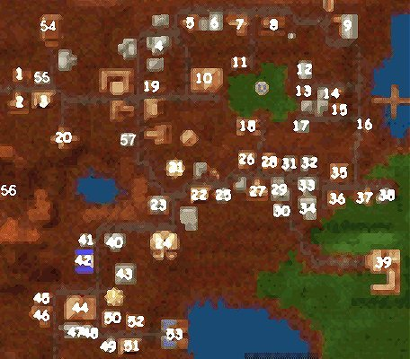

Free Haven: City Map

| Free Haven | |
| 1. | Water Magic Expert $1000 |
| 2. | Fire Magic Expert $1000 |
| 3. | Expert Earth / Expert Air $1000 |
| 4. | Expert Plate Training $2000 |
| 5. | Adept Guild of the Mind |
| 6. | Expert Shield Defense $2000 |
| 7. | The Sharpening Stone Weapons |
| 8. | Duelist's Edge |
| 9. | Disarm Expert $500/Smugglers Guild Membership |
| 10. | Air Guild Membership |
| 11. | Fire Guild Membership |
| 12. | Abdual's Discount Goods |
| 13. | Duelist's Edge Guild Membership 50 |
| 14. | Quest, rescue Sherell at the Temple of Tsantsa |
| 15. | Keg's $300 |
| 16. | Sewer Entrance Tooth Collector $500 |
| 17. | Bank |
| 18. | Training Academy |
| 19. | The Sorcerors Shoppe |
| 20. | Adept Guild of the Spirit |
| 21. | Achemy and Incantations |
| 22. | Expert Sword $2000 and Expert Knife $2000 |
| 23. | Adept Guild of the Earth |
| 24. | Adept Guild of the Body |
| 25. | Buy's Gong's $2000 |
| 26. | Expert Merchant Training |
| 27. | Quest for the Mordred Dagger by Zoltan Phelps |
| 28. | Expert Diplomacy |
| 29. | Fire Guild Membership |
| 30. | Air Guild Membership |
| 31. | A Bard |
| 32. | Heidi Strumper |
| 33. | Earth Guild Membership |
| 34. | Water Guild Membership |
| 35. | Echoing Wisper Inn Cheapest |
| 36. | Harpy Feathers 10 gold each |
| 37. | Sewer Entrance |
| 38. | Indentification Master 7 Skill and 30 intellect |
| 39. | High Council / Oracle / Control Center |
| 40. | Buy's Amber for $500 |
| 41. | Buy's Four Leaf Clover $25 |
| 42. | Adept Guild of the Air |
| 43. | Adept Guild of Fire |
| 44. | Free Haven Travel |
| 45. | The Footman's Friend |
| 46. | Feather And Strings |
| 47. | Victor's Hall |
| 48. | Membership to Guild of the Air $50 |
| 49. | Spirit Guild Membership $50 |
| 50. | Mind Guild Membership $50 |
| 51. | Body Magic Expert / Spirit Magic Expert $2000 |
| 52. | Mind Magic Expert $2000 |
| 53. | Adept Guild of Water |
| 54. | Free Haven Temple as part of the Repair Temple Quest |
| 55. | George Almond The Stone Cutter also see the Repair Temple Quest |
| 56. | Shrine of Accuracy |
| 57. | Ral the carpenter also see the Repair Temple Quest |
Leave me a mgrounds@hotmail.com